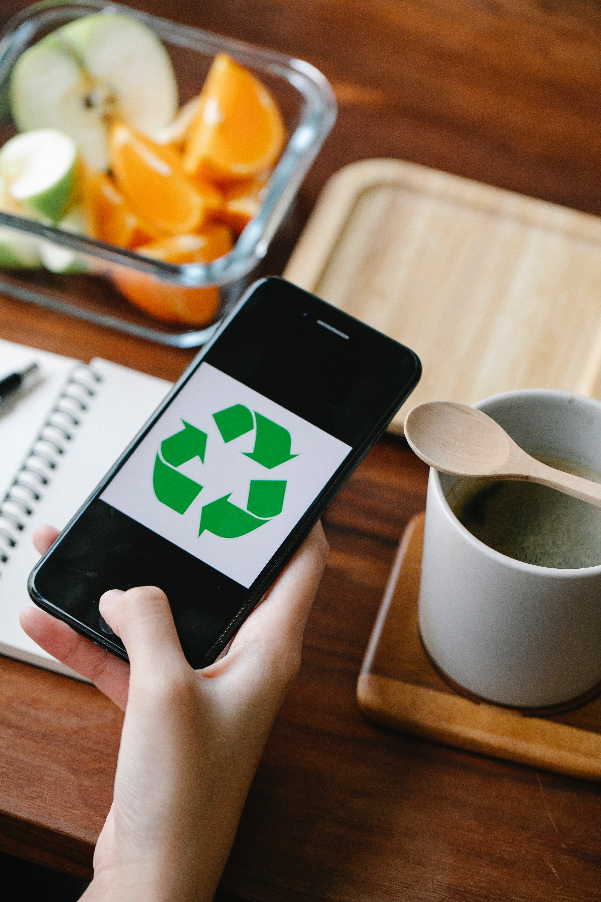

Our Services
Food Donation
Food donation is the act of giving food to those in need. This can be accomplished by donating surplus food from restaurants, grocery stores, and other food businesses, or by donating food directly to food banks and other charitable organizations. Food donation helps to address food insecurity, which is a significant issue in many communities. By donating food that would otherwise go to waste, we can provide nourishment to those who are struggling to access healthy, nutritious meals. Food donation is also a sustainable solution to food waste, as it reduces the amount of food that ends up in landfills and helps to conserve natural resources. By donating food, we can make a positive impact on the lives of others and create a more sustainable future.

About us
This Organization is a Not-For-Profit surplus food management organisation connecting untouched edible surplus food with needy people for making the World Hunger Free and Zero Food Waste. At Food Waste Management, we believe that reducing food waste is not just a responsibility, but an opportunity. Our mission is to help individuals and businesses alike make a positive impact on the environment, while also saving money and supporting their communities. The statistics on food waste are staggering. In the United States alone, it is estimated that up to 40% of all food produced is wasted. Meanwhile, millions of people go hungry every day. We simply cannot afford to continue this trend. That's where we come in. We offer a range of services to help our clients reduce their food waste, from donating excess food to local charities to composting and recycling food scraps. We work with businesses, schools, restaurants, and individuals to develop customized solutions that fit their unique needs. But reducing food waste is about more than just saving money and reducing environmental impact. It's also about supporting our communities and fostering a culture of responsibility and sustainability. By working together, we can make a real difference in the world. Join us in our mission to reduce food waste and create a better future for all. Together, we can build a more sustainable and equitable world, one meal at a time.
Food Recycling
Food recycling is the process of taking food waste and turning it into a usable product or material. There are several methods of food recycling, including composting, anaerobic digestion, and bio-drying. Composting is the most common form of food recycling, in which food waste is mixed with yard waste and other organic materials to create a nutrient-rich soil amendment. This process takes advantage of naturally occurring microorganisms to break down the organic material into a stable compost product that can be used to improve soil health and fertility. Anaerobic digestion is another method of food recycling that involves breaking down organic material in the absence of oxygen to produce biogas, which can be used to generate electricity or heat. The remaining material can be used as a fertilizer or soil amendment. Bio-drying is a newer method of food recycling that involves drying and sterilizing food waste using a combination of heat and airflow. The resulting material can be used as a fuel source, or as a soil amendment. Food recycling is important because it reduces the amount of waste that goes into landfills, which in turn reduces greenhouse gas emissions and helps to conserve natural resources. By turning food waste into a usable product, we can also create economic opportunities and reduce the environmental impact of food production.
